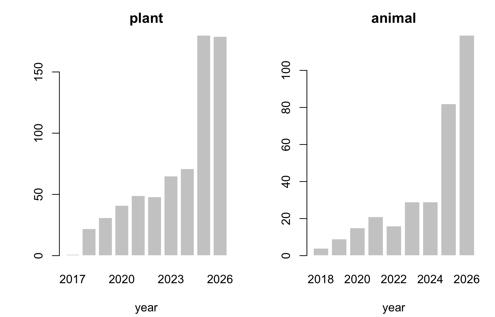
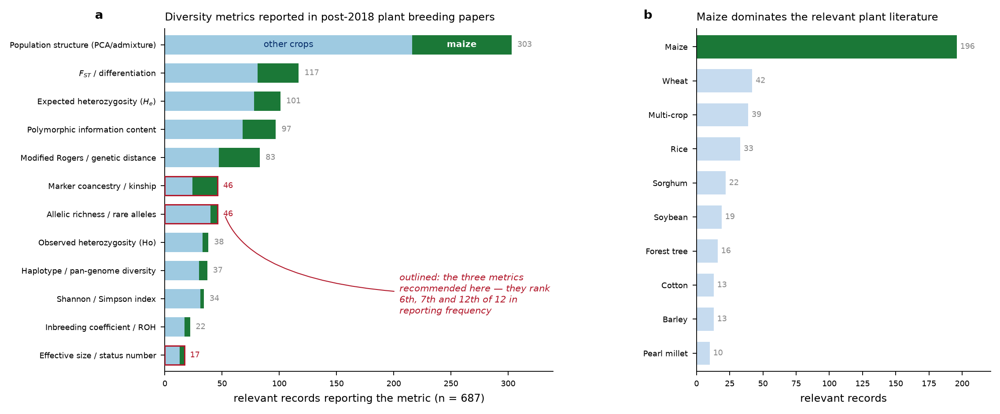

| Corpus | Records | Years | Focus |
|---|---|---|---|
bibliography_animal.csv |
324 | 2018-2026 | optimal contribution, coancestry matrix choice, effective size, allelic richness |
bibliography_plant.csv |
687 | 2017-2026 | diversity quantification, heterotic structure, genetic resources, optimisation |
Appendix D — The bibliographic corpora
Chapter 12 draws on two screened corpora. This appendix describes them so the claims there can be checked, extended, or disagreed with.
D.1 What they are
Both are annotated screens, not exhaustive searches. The plant corpus came from 2004 records across 29 plant-breeding queries on Crossref and Europe PMC, of which 687 were scored relevant.
D.2 Structure
names(pl)
#> [1] "doi" "year" "authors" "title"
#> [5] "journal" "citations" "relevance" "crop"
#> [9] "metric_used" "selection_method" "contribution" "url"| Column | Meaning |
|---|---|
relevance |
3 = directly relevant, 2 = related background |
crop |
plant corpus only |
metric_used / metric_advocated |
the diversity metrics the record reports |
selection_method |
plant corpus only |
theme |
animal corpus only; multi-valued, semicolon-separated |
contribution / relevance_note |
a one-line note on what the record adds |
D.3 Relevance and coverage
table(plant = pl$relevance)
#> plant
#> 2 3
#> 529 158
table(animal = ani$relevance)
#> animal
#> 2 3
#> 235 89| crop | records |
|---|---|
| maize | 54 |
| wheat | 11 |
| multi-crop | 10 |
| rice | 9 |
| none | 7 |
| sorghum | 5 |
| barley | 4 |
| none (general crop) | 4 |
| potato | 3 |
| soybean | 3 |
Maize dominates, which is the intended bias – but it also means every claim in Chapter 12 about crops other than maize rests on a handful of records.


D.4 Themes in the animal corpus
The theme column is multi-valued. Splitting it:
th <- unlist(strsplit(ani$theme[ani$relevance == 3], ";\\s*"))
th <- trimws(th); th <- th[nzchar(th)]
sort(table(th), decreasing = TRUE)
#> th
#> OCS / contribution optimisation Coancestry / relationship matrix choice
#> 68 61
#> Optimisation algorithms / cost Allelic richness / rare alleles
#> 27 20
#> Effective size Heterozygosity / gene diversity
#> 18 15
#> Core collection / subset selection
#> 9D.5 Querying them
The corpora are ordinary CSVs, so the claims in Chapter 12 are checkable in one line each.
# records that report a coancestry or kinship metric
sum(grepl("coancestry|kinship|relatedness", pl$metric_used, ignore.case = TRUE))
#> [1] 12
# records using ROH, and how many of those are maize
roh <- grepl("ROH", pl$metric_used, ignore.case = TRUE)
c(roh_total = sum(roh), roh_maize = sum(roh & grepl("maize", pl$crop, ignore.case = TRUE)))
#> roh_total roh_maize
#> 1 0
# the most-cited directly relevant maize records
mz <- pl[pl$relevance == 3 & grepl("maize", pl$crop, ignore.case = TRUE), ]
head(mz[order(-mz$citations), c("year", "title", "citations")], 6)| year | title | citations | |
|---|---|---|---|
| 6 | 2020 | Diversity and heterotic patterns in North American proprietary dent maize germplasm | 58 |
| 10 | 2020 | Discovery of beneficial haplotypes for complex traits in maize landraces. | 46 |
| 11 | 2021 | Genetic diversity and selection signatures in maize landraces compared across 50 years of in situ and ex situ conservation | 44 |
| 14 | 2021 | Application of Genomic Selection at the Early Stage of Breeding Pipeline in Tropical Maize. | 38 |
| 21 | 2020 | Efficiencies of Heterotic Grouping Methods for Classifying Early Maturing Maize Inbred Lines | 26 |
| 23 | 2021 | Genetic variation and population structure in China summer maize germplasm. | 25 |
# the animal-side records on matrix choice
mc <- ani[grepl("Coancestry / relationship matrix choice", ani$theme), ]
head(mc[order(-mc$citations), c("year", "title", "citations")], 6)| year | title | citations | |
|---|---|---|---|
| 1 | 2018 | Optimal cross selection for long-term genetic gain in two-part programs with rapid recurrent genomic selection | 156 |
| 90 | 2019 | The impact of genomic selection on genetic diversity and genetic gain in three French dairy cattle breeds | 100 |
| 2 | 2020 | Management of Genetic Diversity in the Era of Genomics. | 72 |
| 92 | 2019 | Genomic Tools for Effective Conservation of Livestock Breed Diversity | 71 |
| 94 | 2020 | Molecular genetic analysis of spring wheat core collection using genetic diversity, population structure, and linkage disequilibrium | 65 |
| 3 | 2019 | Improving Short- and Long-Term Genetic Gain by Accounting for Within-Family Variance in Optimal Cross-Selection. | 59 |
D.6 Limitations
These are abstract screens. Relevance and the metric annotations were scored from titles and abstracts, not from full texts. A paper that computes a metric without naming it in the abstract is invisible to this table – which almost certainly understates how often coancestry is computed as an intermediate step.
The queries shaped the answer. 29 plant-breeding queries were run; a different query set would return a different landscape. The strong maize skew is by design, and the counts for other crops are too small to support a claim about those crops.
“Not established in the retrieved set” means exactly that. Every such statement in Chapter 12 is a claim about this corpus, not about the literature as a whole. It is a prompt to look further before assuming novelty, not a proof of it.
Citation counts are a snapshot at screening time and are already stale.
D.7 Classical references
The corpora are deliberately post-2017. The classical results the book rests on are cited from the source literature, and collected in book/references.bib:
| Result | Source |
|---|---|
| group coancestry | Cockerham (1967) |
| molecular / IBS coancestry | Nejati-Javaremi et al. (1997) |
| gene diversity, Gst | Nei (1973) |
| the subdivided-population partition | Caballero & Toro (2000, 2002) |
| status number | Lindgren & Mullin (1997, 1998) |
| optimal contribution selection | Meuwissen (1997) |
| genomic relationship matrix | VanRaden (2008) |
| modified Rogers distance | Wright (1978) |
| usefulness criterion | Schnell & Utz (1975) |
| differential evolution | Storn & Price (1997) |